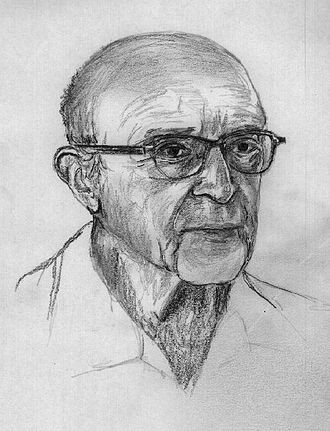

一、代表人物：卡爾·羅傑斯(Carl Ransom Roger)
- 出生：美國伊利諾州奧克帕克（芝加哥郊區）。
家庭：父親是土木工程師而母親是家庭主婦。6個子女中的第4個。
宗教：信仰基督教。
背景：羅傑斯在嚴格的宗教性和倫理性的教育環境下成長，使他成為一個相當孤立、獨立而有紀律的人，這也反映在他的成就上：其一是重視倫理與道德觀念；其二是尊重科學方法。
職業：農業(宗教因素)→歷史學→神學院→心理學。
轉捩點：1922年前往北京參加國際基督徒大會，因為這次旅行，使得他開始懷疑自己對宗教的奉獻；他也參加了一個名為「為什麼我成為牧師」的研討會，這幫助他弄清楚自己的職業選擇，在這之後，他決定要改變自己的人生方向。
心理學：他在芝加哥學習心理學課程，並在1931年得到了博士學位。後因與威斯康辛大學心理學系發生一些衝突，羅傑斯對當時心理學的發展不抱有任何期望。直到他突然離世前，他一直在La Jolla做研究，同時間他繼續進行心理治療、演講、寫作等工作。
簡介
- 羅傑斯是人本主義心理學的主要代表人物之一
- 羅傑斯常被稱為「心理治療研究之父」
- 羅傑斯是第一個採用分析實際治療歷程紀錄的方式深入研究諮商歷程的學者
- 他致力於發展較不強調病理以距教於個人力量與資源的心理治療
- 羅傑斯也曾獲得諾貝爾和平獎提名